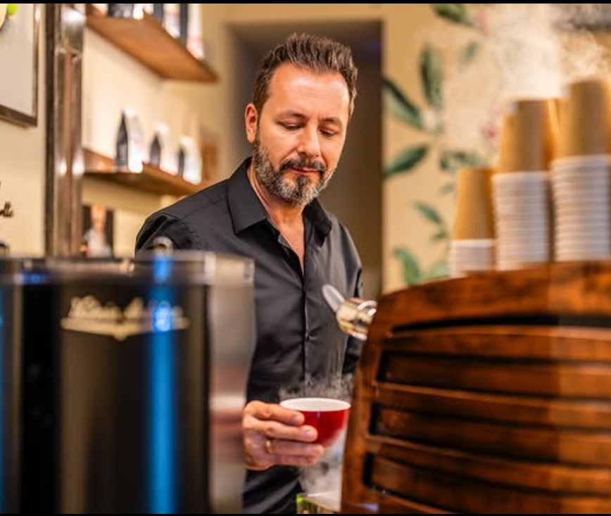

2naji-portrait.pngNaji behind the bar or holding a latte — portrait style, warm tones
800 × 1060 px (3:4 portrait)
800 × 1060 px (3:4 portrait)
El origen
The origin
Nací en Iraq.
I was born in Iraq.
Nací en Iraq.
El café me trajo a Madrid.
I was born in Iraq.
Coffee brought me to Madrid.
Naji Asali nació en Bagdad y visitó España por primera vez de niño. Años después, volvió por amor y descubrió que Madrid sería su hogar. Con más de 15 años como barista, su sueño era claro: un espacio que uniera la hospitalidad iraquí con el café de especialidad europeo.
Naji Asali was born in Baghdad and visited Spain for the first time as a child. Years later, he returned for love and discovered Madrid would be his home. With over 15 years as a barista, his dream was clear: a space that would unite Iraqi hospitality with European specialty coffee.